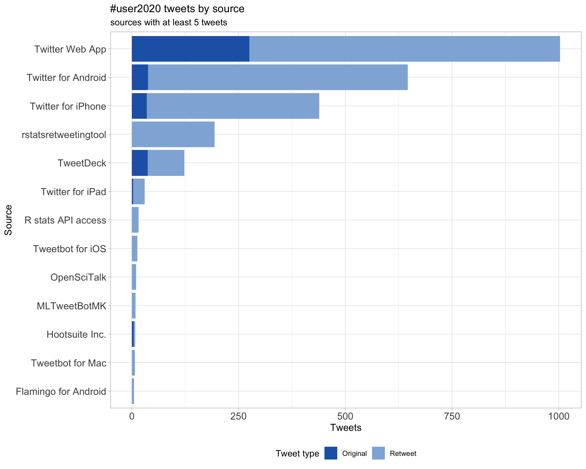
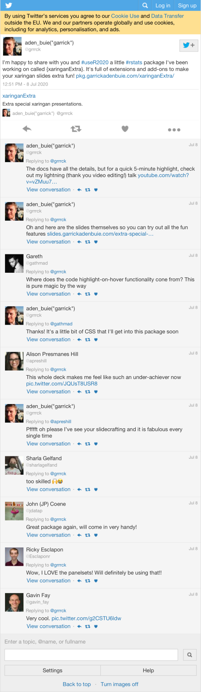

useR 2020
The R user conference 2020 (online due to COVID-19)
2020-07-09 10:26:14
Parameters
| Parameter | Value |
|---|---|
| hashtag | #user2020 |
| start_day | 2020-07-08 |
| end_day | 2020-07-11 |
| timezone | Etc/UTC |
| theme | theme_light |
| accent | #2165b5 |
| accent2 | #90B2DA |
| kcore | 2 |
| topics_k | 6 |
| bigram_filter | 3 |
| fixed | FALSE |
| seed | 1 |
1 Introduction
An analysis of tweets from the #user2020 hashtag. A total of 1154 tweets from 621 users were collected using the rtweet R package.
2 Timeline
2.1 Tweets by day

2.2 Tweets by day and time
Filtered for dates 2020-07-08 - 2020-07-11 in the Etc/UTC timezone.

3 Users
3.1 Top tweeters
Overall

Original

Retweets

3.2 Retweet proportion

3.3 Top tweeters timeline

3.4 Top tweeters by day
Overall
Day 1

Day 2

Day 3

Day 4

Original
Day 1

Day 2

Day 3

Day 4

Retweets
Day 1

Day 2

Day 3

Day 4

4 Sources

5 Networks
5.1 Replies
The “replies network”, composed from users who reply directly to one another, coloured by PageRank.

5.2 Mentions
The “mentions network”, where users mention other users in their tweets. Filtered for a k-core of 2. Node colour and size adjusted according to PageRank score.

6 Tweet types
6.1 Retweets
Proportion

Count

Top 10
| screen_name | text | retweet_count |
|---|---|---|
| grrrck |
I’m happy to share with you and #useR2020 a little #rstats package I’ve been working on called {xaringanExtra}. It’s full of extensions and add-ons to make your xaringan slides extra fun! https://t.co/cflHqoUija |
108 |
| useR2020stl | Today is the day! All talks for #user2020 are available to stream live on our YouTube channel: https://t.co/SKAnS0JVxe | 76 |
| lacion |
🌈“Communities of Practice in Latin America: #rstats & Friends†for #useR2020 is now available at 🔗https://t.co/NfT1kbITBH🉠Emotional as I tweet because it features 35 authors from 🇦🇷🇦🇺🇧🇴🇧🇷🇨🇱🇨🇷🇪🇨🇲🇽🇵🇪🇺🇸🇺🇾! Brilliantly co-organized by @yabellini @PaobCorrales @palolili23 &💁🏽‍♀️💜 |
46 |
| thomas_mock |
So excited to be sharing what the community has built around #TidyTuesday for #useR2020 ! “TidyTuesday: Scaffolding for a Community of Practice†Slides: https://t.co/PAs1uruopZ #rstats |
35 |
| useR2020muc |
Interested in the work of R core? Tomorrow is your chance to learn about it in the R core keynotes and panel discussion. #rstats #useR2020 https://t.co/ISTxC3A6Bg |
34 |
| useR2020stl | Remember to make some space in your calendar next week for #useR2020’s live events organized together with @useR2020muc! We’ve got a great lineup, and you can watch all of this #rstats goodness via YouTube (links are forthcoming). https://t.co/FlcQMhE2NS | 34 |
| useR2020muc |
You can now find all contributed “sessions†as playlists on our YouTube channel! â–¶ï¸âœ¨ğŸ‰ #useR2020 @useR2020stl @useR2020muc #rstats https://t.co/ifaceEmOP0 |
31 |
| useR2020muc |
Want to add all live events of #useR2020 to your calendar? 🗓️ical: https://t.co/66tgJkzyyB 🗓️Web: https://t.co/vROSafXPVv For details, see: https://t.co/P6mqHNVupn @useR2020stl |
27 |
| useR2020muc |
To make it easier for you to know about times and dates of the #useR2020 live events, we’ve integrated a calendar on our website which should show events in your time zone. https://t.co/P6mqHNVupn https://t.co/ZPORL5c6nk |
21 |
| AmeliaMN | My #useR2020 keynote, Speaking R, is tomorrow at 18:00 UTC. It will be streamed live here, https://t.co/XSJIVSHtM7, and you can check timing on the agenda: https://t.co/jB6lX8ivNR | 19 |
Most retweeted

6.2 Likes
Proportion

Count

Top 10
| screen_name | text | favorite_count |
|---|---|---|
| grrrck |
I’m happy to share with you and #useR2020 a little #rstats package I’ve been working on called {xaringanExtra}. It’s full of extensions and add-ons to make your xaringan slides extra fun! https://t.co/cflHqoUija |
437 |
| useR2020stl | Today is the day! All talks for #user2020 are available to stream live on our YouTube channel: https://t.co/SKAnS0JVxe | 177 |
| thomas_mock |
So excited to be sharing what the community has built around #TidyTuesday for #useR2020 ! “TidyTuesday: Scaffolding for a Community of Practice†Slides: https://t.co/PAs1uruopZ #rstats |
112 |
| HeidiBaya |
I moved to the living room for optimal internet connection to live stream #useR2020 So excited and nervous! https://t.co/lu9G8BOMl5 |
106 |
| useR2020muc |
Interested in the work of R core? Tomorrow is your chance to learn about it in the R core keynotes and panel discussion. #rstats #useR2020 https://t.co/ISTxC3A6Bg |
95 |
| thomas_mock |
Loved @grrrck ’s presentation on {xaringanExtra} for #user2020 !
So much packed into 5 min!!! https://t.co/s22fIC7Yot |
95 |
| useR2020stl | Remember to make some space in your calendar next week for #useR2020’s live events organized together with @useR2020muc! We’ve got a great lineup, and you can watch all of this #rstats goodness via YouTube (links are forthcoming). https://t.co/FlcQMhE2NS | 84 |
| lacion |
🌈“Communities of Practice in Latin America: #rstats & Friends†for #useR2020 is now available at 🔗https://t.co/NfT1kbITBH🉠Emotional as I tweet because it features 35 authors from 🇦🇷🇦🇺🇧🇴🇧🇷🇨🇱🇨🇷🇪🇨🇲🇽🇵🇪🇺🇸🇺🇾! Brilliantly co-organized by @yabellini @PaobCorrales @palolili23 &💁🏽‍♀️💜 |
78 |
| useR2020muc |
You can now find all contributed “sessions†as playlists on our YouTube channel! â–¶ï¸âœ¨ğŸ‰ #useR2020 @useR2020stl @useR2020muc #rstats https://t.co/ifaceEmOP0 |
65 |
| AmeliaMN | My #useR2020 keynote, Speaking R, is tomorrow at 18:00 UTC. It will be streamed live here, https://t.co/XSJIVSHtM7, and you can check timing on the agenda: https://t.co/jB6lX8ivNR | 65 |
Most likes

6.3 Quotes
Proportion

Count

Top 10
| screen_name | text | quote_count |
|---|---|---|
| rweekly_org | Plan for #useR2020 https://t.co/JnJEX0dUZK | 6 |
| useR2020stl | Remember to make some space in your calendar next week for #useR2020’s live events organized together with @useR2020muc! We’ve got a great lineup, and you can watch all of this #rstats goodness via YouTube (links are forthcoming). https://t.co/FlcQMhE2NS | 6 |
| PhDToothFAIRy | I’m super excited about the #useR2020 sessions in the upcoming days! Thanks @useR2020stl for taking it online! https://t.co/mQQbl46oCT | 6 |
| natorro | Comienza ya #useR2020 la conferencia más importante de R y sus usos del mundo. Estén atentos, este año es online :-D https://t.co/f6FhGlWtGN | 6 |
| RLadiesEskisehR | 👩‍💻 useR 2020 konferans programı için tıklayın : 👇 Sunumlar yarın başlıyor ayrıca Youtube üzerinden izlenebilecek 😉 #RStats #useR2020 https://t.co/te7Q2W0Q0v | 6 |
| rnzbrk | useR konferansı bu sene hem ücretsiz hem de online olacak. Kaçırmayın derim! #rstats #user2020 https://t.co/Ijuy50NEIx | 6 |
| miljenka_vuko | That feeling when all the hard work starts to take shape 🤩 Although it sucks that it couldn’t happen in person, this way - EVERYONE can join! #rstats-ists, join us for the #user2020 fiesta during July! https://t.co/ZnretCXp8w https://t.co/Ky5m25SOVo | 4 |
| natydemi | #useR2020 Agenda: https://t.co/bZFEZhA9CY ♡ https://t.co/hAc9QBAMzN | 4 |
| RLadiesBH | O evento esse ano será gratuito e online #useR2020 https://t.co/54LXzPibAk | 4 |
| RLadiesCba | Esta edición de #useR2020 será gratuita y online No es necesaria inscripción Las charlas van a estar disponible con subtitulos en Youtube #RStats #rstats https://t.co/S4rDaxVi8g | 4 |
Most quoted

7 Media
Proportion

Top 10
| screen_name | text | favorite_count |
|---|---|---|
| HeidiBaya |
I moved to the living room for optimal internet connection to live stream #useR2020 So excited and nervous! https://t.co/lu9G8BOMl5 |
106 |
| kara_woo | It’s a bummer to not be able to attend an in-person #useR2020, but there are some benefits to watching from home. https://t.co/YmTkRW5U43 | 63 |
| useR2020muc |
To make it easier for you to know about times and dates of the #useR2020 live events, we’ve integrated a calendar on our website which should show events in your time zone. https://t.co/P6mqHNVupn https://t.co/ZPORL5c6nk |
46 |
| romain_francois | The #useR2020 venue is pretty cool https://t.co/RE6xR0bLjP | 44 |
| fellgernon |
My fav #useR2020 #rstats talk was organized by @yabellini @_lacion_ @PaobCorrales @palolili23 (totally biased) I 📣 for @rOpenSci, @josschavezf1 📢 about @CDSBMexico @Bioconductor 📹 https://t.co/xRJPdiCqaZ 📔🇺🇸 https://t.co/bDy3QtZQrK @RConsortium 📔🇲🇽 https://t.co/FhHWpSrQi4 https://t.co/Q0YPZxr5oB |
25 |
| MuSigmaInc | Mu Sigma is proud to be one of the sponsors and presenters at @useR2020stl Here’s our presentation on Case-Based Computational Geometry Modeling > https://t.co/wZoRTPUxRr #rstats #useR2020 https://t.co/3Z47svw9Yq | 23 |
| useR2020muc |
Our first #useR2020 event will be a breakout session “Tackling Climate Change†ğŸŒğŸŒğŸŒ When: https://t.co/79etXmSXTG Where: https://t.co/Ytr22cT0J7 #rstats https://t.co/FlWF1hEOh8 |
20 |
| useR2020muc |
@chrisprener, @jenineharris and @HeidiBaya are kicking off #useR2020 now! https://t.co/L5J8XtuOrX https://t.co/IroaUH50ek |
14 |
| moh_fodil |
The poster sessions of #useR2020 @useR2020stl @useR2020muc are online, don’t miss the opportunity to take a look at amazing #rstats packages. https://t.co/js8WPqGLp6 https://t.co/yjUejqPjY9 |
12 |
| chrisprener | Even my computer is getting in on the #useR2020 hype 😂 no pressure @jenineharris and @HeidiBaya! https://t.co/usGSS1f7nT | 9 |
7.1 Most liked image

8 Tweet text
8.1 Word cloud
The top 100 words used 3 or more times.

8.2 Bigram graph
Words that were tweeted next to each other at least 3 times.

8.3 Topic modelling
Top 10 words associated with 6 topics identified by LDA.

8.3.1 Representative tweets
Most representative tweets for each topic
Topic 1
| screen_name | text | gamma |
|---|---|---|
| yabellini | @SSanchezColon @_lacion_ @R4DScommunity @PaobCorrales @palolili23 Porque #useR2020 es en Inglés. Conf de R en Español: @conecta_R Conf de R en Español, Portugués (que también habla LatAm) e Inglés @LatinR_Conf .Ambas hechas por y para la comunidad. La segunda totalmente voluntaria. Los subtÃtulos también estarán en Español (hechos x nosotros) | 0.9975079 |
| ixpantia |
Para nosotros en @ixpantia nos alegra ver dos iniciativas mencionadas en esta charla durante #useR2020 que hemos apoyado desde que arrancaron: @datalatam y @conecta_R. ¡Vamos a seguir apoyándolos para fomentar el crecimiento de la comunidad de ciencia de datos en la región! https://t.co/ID4LTRSQDU |
0.9973009 |
| yabellini | Un blog post que resume las iniciativas que se llevan adelante en Latinoamérica para desarrollar la comunidad en nuestra región. Este post es un resumen de nuestro panel “Comunidades de práctica en América Latina: R y amigues†en #useR2020 1/2 https://t.co/MKFtXAcZu0 | 0.9970564 |
| RLadiesLaPaz | Ya salió el vÃdeo de “Communities of Practice in Latin America: #rstats & Friends†para #useR2020. Sigamos difundiendo el conocimiento en Latinoamérica! La unidad hace la fuerza ğŸ˜ğŸ™Œ! #rstats #Bolivia 🇧🇴 #LATAM https://t.co/JUAfhe8XU7 | 0.9964050 |
| natorro | Comienza ya #useR2020 la conferencia más importante de R y sus usos del mundo. Estén atentos, este año es online :-D https://t.co/f6FhGlWtGN | 0.9946192 |
| rnzbrk | useR konferansı bu sene hem ücretsiz hem de online olacak. Kaçırmayın derim! #rstats #user2020 https://t.co/Ijuy50NEIx | 0.9930945 |
| lacion |
🗣️@LuisDVerde @agomezodd @BeaMilz Denisse Fierro Arcos @fellgernon @josschavezf1 @rivaquiroga @cantoflor_87 @gdequeiroz @fransvandunne @yabellini @PaobCorrales @palolili23 & 💁🏽‍♀️ report on a ton of work around #rstats & friends in LatAm at #useR2020 🔗https://t.co/NfT1kbITBH |
0.9930945 |
| fellgernon |
My fav #useR2020 #rstats talk was organized by @yabellini @_lacion_ @PaobCorrales @palolili23 (totally biased) I 📣 for @rOpenSci, @josschavezf1 📢 about @CDSBMexico @Bioconductor 📹 https://t.co/xRJPdiCqaZ 📔🇺🇸 https://t.co/bDy3QtZQrK @RConsortium 📔🇲🇽 https://t.co/FhHWpSrQi4 https://t.co/Q0YPZxr5oB |
0.9925681 |
| lori_ling |
#useR2020 will be free and online. Talks will be available on YouTube (live or pre-recorded & be captioned). No need to sign up or register. https://t.co/Zrl9O6FFVW |
0.9912310 |
| mmznr | Really useful: Privacy protected Maps using kernel density estimation in #rstats from Edwin de Jonge @statisticscbs #useR2020 @useR2020muc https://t.co/Egof6gT68G | 0.9912310 |
Topic 2
| screen_name | text | gamma |
|---|---|---|
| RLadiesMedellin | 📢La próxima semana se realizará el evento✨#useR2020 ✨. Podrás asistir a todas las conferencias virtuales a través del canal de Youtube 🥠https://t.co/WkyeI82m67. Aquà encontrarás la programación: https://t.co/mkXh8jo1bo.🗒ï¸ğŸ“Œ | 0.9959579 |
| andyteucher | My #useR2020 talk is posted in the #rspatial track: https://t.co/U3bCJoGmQS. The {bcdata} package, developed with @big_bad_sam and @stephhazlitt, for getting data from the #BritishColumbia data catalogue - including a dbplyr interface to a Web Feature Service | 0.9946192 |
| thomas_mock |
Loved @grrrck ’s presentation on {xaringanExtra} for #user2020 !
So much packed into 5 min!!! https://t.co/s22fIC7Yot |
0.9943048 |
| nickseewald |
Me, listening to Luke Tierney talk about the intricacies of possible upcoming R syntax changes #useR2020 (I find the magrittr pipe syntax hard to read I’M SORRY I’M SORRY) https://t.co/urhzSwV2du |
0.9935513 |
| useR2020muc |
MUACz: An R Package for Generating MUAC and BMI z-scores and Percentiles for Children and Adolescents by Lazarus Mramba #useR2020 #rstats #biostatistics https://t.co/Na849PrhaZ |
0.9930945 |
| thomas_mock |
So excited to be sharing what the community has built around #TidyTuesday for #useR2020 ! “TidyTuesday: Scaffolding for a Community of Practice†Slides: https://t.co/PAs1uruopZ #rstats |
0.9925681 |
| HeidiBaya |
The day is finally here! I am so excited 🎉🤓 Join us at 18:00 CEST for our welcome address to the first virual useR! ever, co-organized by @useR2020stl and @useR2020muc No registration required, just join! #useR2020 https://t.co/sRjhfK6jK0 |
0.9925681 |
| AndyPryke | Great that #useR2020 is now online. Missing the beers & chat & meeting/catching up with so many interesting people! https://t.co/1D8EMJCdL2 (note: more talks under the “program†drop down) | 0.9919547 |
| RLadiesCba |
Si querés saber más detalles https://t.co/81SJICLXZk y podés seguir las cuentas @useR2020stl, @useR2020muc y el hashtag #useR2020 |
0.9919547 |
| useR2020muc |
Very Easy Web Scraping with ralger by Mohamed El Fodil Ihaddaden #useR2020 #rstats #WebApp https://t.co/XVxpLWDM44 |
0.9912310 |
Topic 3
| screen_name | text | gamma |
|---|---|---|
| R_Forwards |
All #useR2020 contributed videos have been captioned. To submit translations or corrections (“translation†from published version to another English version):
|
0.9964050 |
| techg_row | Instagram Knowledge..🤔🤔 #Instagram #instagramfacts #TwitterOfTime #techfacts #technologynews #Google #Chrome #user2020 #tech #WhatDoYouThink #tech #knowledgemanagement #Tech4All #GoogleDoodle #knowledge #newupdates #upcomings #technology FOLLOW FOR MORE DAILY TECH NEWS…👆 https://t.co/i9JPYMZNl4 | 0.9959579 |
| big_bad_sam |
Checkout @andyteucher’s awesome #useR2020 talk on the bcdata📦: https://t.co/fxFgNij95H
Also a great time to mention that a new version of bcdata recently hit cran. Changes include: works better. Docs here: https://t.co/deFE68Gt2h @Data_BC @stephhazlitt #rstats |
0.9946192 |
| nickseewald | Fascinating consequence of stringsAsFactors = FALSE by default in R 4.0.0 — model coefficients might depend on system language if you convert character to factor after reading in data. Whoa. #useR2020 | 0.9943048 |
| kara_woo | In his #useR2020 keynote @LukeTierney4 discusses different options under consideration for more concise anonymous functions. Sounds like if I wait long enough, there’s a possibility we’ll get stabby(ish) lambda syntax in #rstats 😉 https://t.co/OmQGco5RNM | 0.9943048 |
| chrisprener | Today is bittersweet - I’m so grateful for our #StLouis organizing team who worked for nearly a year before we had to pause our #useR2020 planning and ultimately cancel the in-person event due to COVID. Thanks to each and every one of you for your dedication to the conference! https://t.co/eas0NE3xo7 | 0.9939515 |
| useR2020muc |
Two hours to go until our first #useR2020 event! 🎉✨🤓 â–¶ï¸ Join in for our breakout event on “Tackling Climate Change†ğŸŒğŸŒğŸŒ We’ll have exciting talks and plenty of time to discuss. Zoom: https://t.co/Ytr22cT0J7 |
0.9935513 |
| kara_woo | Global condition handlers (new in R 4.0.0 thanks to @LukeTierney4 & @_lionelhenry) allow you to: ✅ turn some warnings into errors ✅ capture some errors and present additional info ✅ ignore some warnings or messages #user2020 | 0.9930945 |
| sharlagelfand | imagining a different reality with many of us in St Louis and Munich for #useR2020 this week 😠but i’m happy and grateful to be safe at home watching online 🥰 https://t.co/MKnT8tlceY | 0.9925681 |
| aktilot | Excited for all the great #useR2020 content coming this month! Great list of contributed talks (biostats to shiny apps!) here: https://t.co/CbbYfePDSy https://t.co/1HVTdVCjhQ | 0.9919547 |
Topic 4
| screen_name | text | gamma |
|---|---|---|
| groundwalkergmb | My #user2020 talk about {rtables} for generating complex, multi-level tabulations for display/reporting tables is up. Pkg is fully general/data agnostic but think report tables submitted to FDA/EMA. #rstats not historically used for that, but it will be. https://t.co/Xt1ESs6hQA | 0.9953836 |
| R_Forwards | Succession and diversity were key topics in the #useR2020 R Core panel (https://t.co/e9mDWYqvAb). We are putting a team together with @lawremi to work on initiatives that will encourage new contributors, with a focus on inclusion. Do get in touch if you’d like to be involved! | 0.9943048 |
| thomas_mock |
Check out Daniel Jacobs (@djacobs7 ) #user2020 talk on: “Learning R through spaced Repetition and the Remembr Package†Some #TidyTuesday code used to find top packages or other code used. https://t.co/WOzYA1wlf2 |
0.9939515 |
| CivicAngela | I have been so impressed at the work that the Latin #RLadies communities have done! If you’re looking for inspiration for how to grow a data community together (plus ideas for yours), I recommend viewing this video! #rstats #useR2020 @_lacion_ @yabellini @PaobCorrales @palolili23 https://t.co/NbLS8s9dBI | 0.9939515 |
| lacion |
🌈“Communities of Practice in Latin America: #rstats & Friends†for #useR2020 is now available at 🔗https://t.co/NfT1kbITBH🉠Emotional as I tweet because it features 35 authors from 🇦🇷🇦🇺🇧🇴🇧🇷🇨🇱🇨🇷🇪🇨🇲🇽🇵🇪🇺🇸🇺🇾! Brilliantly co-organized by @yabellini @PaobCorrales @palolili23 &💁🏽‍♀️💜 |
0.9935513 |
| miljenka_vuko | #user2020 is finally starting! And with a very important topic - we are going to Tackle Climate Change! 🌏🌍🌎 Thanks Olga Mierzwa-Sulima @olga_mie for organizing! Join us today at 4pm CET, details below ⬇️ https://t.co/QEo0ZTiNV2 | 0.9935513 |
| useR2020muc |
Did you miss today’s live session? Worry not! You can have a look on our YouTube Channel and watch it at your own desired speed! That’s certainly an advantage of this online conference. #useR2020 #rstats https://t.co/ISTxC3A6Bg |
0.9935513 |
| cantoflor_87 | ✨In the last 3 years, I have collaborated in the growth of communities like @thecarpentries🔨 @LatinR_Conf 🌎@RLadiesBA💜 (+ #rladies global team) @ReproHack♻️@renbaires🛸 in #LatAm with AMAZING people! 😃👉 Have a look at this video to know more #rstats #useR2020 https://t.co/1vuEfkaXyK | 0.9930945 |
| useR2020muc |
Join us for our first live YouTube session consisting of three parts
|
0.9930945 |
| lacion |
🏃🏽‍♀️🏃🏽‍♂️Watch https://t.co/NfT1kbITBH for updates about great communities such as 🌟🌟🌟🌟🌟 @LatinR_Conf @conecta_R @satRdays_org @RLadiesGlobal @rOpenSci @CDSBMexico @RConsortium RUGs @R4DS_es @thecarpentries @ReproHack @AIinclusive @datalatam @metadocencia #rstats #useR2020 |
0.9925681 |
Topic 5
| screen_name | text | gamma |
|---|---|---|
| suziinao | Mein #Account zeigt als Anzahl der #Tweets 8446,- das sind 5000+ in 6 Monaten, in denen ich selten getweetet habe. Bei 180 Tagen, wenn ich 10 Tweets täglich gepostet HÄTTE - was ich nicht habe - wären das 1800!#lka #fyi #accountability #notmyfault #user2020 #hack #Paymeforusingme https://t.co/HSCeQ0jbni | 0.9972240 |
| murtha_andy |
I am dialed into the #useR2020 conference starting today! Thank you for holding this event in light of social distancing with COVID-19 Thanks @MuSigmaInc for sponsoring! Let’s see how I can bring ideas back to @HomeDepot #rstats #Analytics #DataScience #DataVisualization |
0.9943048 |
| useR2020stl | Remember to make some space in your calendar next week for #useR2020’s live events organized together with @useR2020muc! We’ve got a great lineup, and you can watch all of this #rstats goodness via YouTube (links are forthcoming). https://t.co/FlcQMhE2NS | 0.9935513 |
| MuSigmaInc | Mu Sigma is proud to be one of the sponsors and presenters at @useR2020stl Here’s our presentation on Case-Based Computational Geometry Modeling > https://t.co/wZoRTPUxRr #rstats #useR2020 https://t.co/3Z47svw9Yq | 0.9930945 |
| grrrck |
I’m happy to share with you and #useR2020 a little #rstats package I’ve been working on called {xaringanExtra}. It’s full of extensions and add-ons to make your xaringan slides extra fun! https://t.co/cflHqoUija |
0.9930945 |
| useR2020muc |
Comparing the Treatment Regimen of Newly Diagnosed Pediatric Leukemia Patients by Sierra Davis #useR2020 #rstats #biostatistics https://t.co/y9EFvNQ6pi |
0.9925681 |
| useR2020muc |
To make it easier for you to know about times and dates of the #useR2020 live events, we’ve integrated a calendar on our website which should show events in your time zone. https://t.co/P6mqHNVupn https://t.co/ZPORL5c6nk |
0.9925681 |
| thirsty_crow | Data scientists at @appsilon are using deep learning to assess property damage caused by natural disasters. #user2020 https://t.co/oUcK1Azesz | 0.9919547 |
| ManningBooks | Hey #useR2020! Save 40% on #rstats, #datascience, #DataAnalytics, #DataViz, #tidyverse, and other books and videos with CODE ctwuseR20 https://t.co/OdkWpxceCQ #manningbooks | 0.9919547 |
| ManningBooks | Hey #useR2020! Save 40% on #rstats, #datascience, #DataAnalytics, #DataViz, #tidyverse, and other books and videos with CODE ctwuseR20 https://t.co/OdkWpwUDeg #manningbooks | 0.9919547 |
Topic 6
| screen_name | text | gamma |
|---|---|---|
| taranago | 時系列データを補完するimputeTSパッケージのデモ。 CRANにあるものは旧版なので、githubからインストールする。install_github(“SteffenMoritz/imputeTS”) https://t.co/8Th1iFKw92 #useR2020 | 0.9961188 |
| EmilyRiederer |
Pleased to share my #UseR2020 lightning talk on {projmgr}. Take 5 minutes to see if this pkg can help you save hours in project management overhead Plus, check out other videos and live talks / tutorials throughout the month thanks to @useR2020stl ! |
0.9949006 |
| mkdyderski |
Want to see what #DataScience can do to help in #EnvironmentalCrisis #Climatechange #research? tune to #useR2020 breakout session “Tackling Climate Change†I’ll tell about #Rstast addicted biologist perspective;) When: https://t.co/mj39Vp4Miy Where: https://t.co/vFo2P3dPjZ https://t.co/NCToZHQVjy |
0.9943048 |
| AurorePaligot | Don’t forget to check the conferences and tutorials program for #useR2020 ! Also have a look at their YouTube channel : https://t.co/iDOVPEhRWh Topics ranging from Programming, Social Science, Teaching, Reproducible Research and much more | 0.9939515 |
| CWRUSwetland | UseR!2020 The R User Conference will take place in July, 2020, and it’s free for anyone interested. We encourage you to participate in the online tutorials or listen to their keynote speakers https://t.co/HNos5zdwFo @useR2020stl #useR2020 @CWRUSOM | 0.9935513 |
| miljenka_vuko | That feeling when all the hard work starts to take shape 🤩 Although it sucks that it couldn’t happen in person, this way - EVERYONE can join! #rstats-ists, join us for the #user2020 fiesta during July! https://t.co/ZnretCXp8w https://t.co/Ky5m25SOVo | 0.9935513 |
| RLadiesEskisehR | 👩‍💻 useR 2020 konferans programı için tıklayın : 👇 Sunumlar yarın başlıyor ayrıca Youtube üzerinden izlenebilecek 😉 #RStats #useR2020 https://t.co/te7Q2W0Q0v | 0.9930945 |
| rhta16 | In case you don’t have enough #rstats in your life (who does?), the #user2020 talks are available to stream live and watch post-conference. All free and no need to register. Videos from past conferences too! Thank you @useR2020stl @useR2020muc! https://t.co/rR3Mv2o66a | 0.9930945 |
| SooTiffany |
Taking over @useR2020muc today and for all upcoming live sessions this week! Super excited for everyone! Tune in at 6pm CEST today! #useR2020 #rstats https://t.co/G23fMN1XXG https://t.co/XhWkEbTdzV |
0.9925681 |
| MikeKSmith | Listening to @LukeTierney4 ’s #useR2020 presentation reminds me that thinking about (and implementing) syntax is HARD. It has to work, be consistent and be intuitive to users. Not trivial at all. https://t.co/kY0uIXsMFG | 0.9925681 |
| Diego_Koz | This is excellent! the #useR2020 incidence in the R software life is enormous, and the user community do have a voice to change existing bias. Love it 😠https://t.co/Pi2gDtd6nD | 0.9925681 |
9 Software
Software mentioned in Tweets with links to GitHub, BitBucket, Bioconductor or CRAN.
| Name | Type | Link |
|---|---|---|
| round | CRAN | https://CRAN.R-project.org/package=round |
| tidytuesday_presentation-user-2020 | GitHub | https://github.com/jthomasmock/tidytuesday_presentation-user-2020/blob/master/tidytuesday_prez-small.pdf |
Session info
## R version 3.6.2 (2019-12-12)
## Platform: x86_64-apple-darwin15.6.0 (64-bit)
## Running under: macOS Catalina 10.15.5
##
## Matrix products: default
## BLAS: /Library/Frameworks/R.framework/Versions/3.6/Resources/lib/libRblas.0.dylib
## LAPACK: /Library/Frameworks/R.framework/Versions/3.6/Resources/lib/libRlapack.dylib
##
## locale:
## [1] en_US.UTF-8/en_US.UTF-8/en_US.UTF-8/C/en_US.UTF-8/en_US.UTF-8
##
## attached base packages:
## [1] stats graphics grDevices utils datasets methods base
##
## other attached packages:
## [1] fs_1.3.1 here_0.1 knitr_1.28 magick_2.4.0
## [5] webshot_0.5.2 viridis_0.5.1 viridisLite_0.3.0 wordcloud_2.6
## [9] RColorBrewer_1.1-2 ggraph_2.0.1 ggrepel_0.8.1 ggplot2_3.2.1
## [13] topicmodels_0.2-11 tidytext_0.2.4 igraph_1.2.4.2 stringr_1.4.0
## [17] purrr_0.3.3 forcats_0.5.0 lubridate_1.7.4 tidyr_1.0.2
## [21] dplyr_1.0.0 rtweet_0.7.0
##
## loaded via a namespace (and not attached):
## [1] httr_1.4.1 tidygraph_1.1.2 jsonlite_1.6.1 assertthat_0.2.1
## [5] askpass_1.1 highr_0.8 stats4_3.6.2 yaml_2.2.1
## [9] progress_1.2.2 slam_0.1-47 pillar_1.4.3 backports_1.1.5
## [13] lattice_0.20-40 glue_1.4.1 digest_0.6.25 polyclip_1.10-0
## [17] colorspace_1.4-1 plyr_1.8.6 htmltools_0.4.0 Matrix_1.2-18
## [21] tm_0.7-7 pkgconfig_2.0.3 scales_1.1.0 processx_3.4.2
## [25] tweenr_1.0.1 ggforce_0.3.1 tibble_2.1.3 openssl_1.4.1
## [29] generics_0.0.2 farver_2.0.3 ellipsis_0.3.0 withr_2.1.2
## [33] lazyeval_0.2.2 cli_2.0.2 NLP_0.2-0 magrittr_1.5
## [37] crayon_1.3.4 ps_1.3.2 evaluate_0.14 tokenizers_0.2.1
## [41] janeaustenr_0.1.5 fansi_0.4.1 SnowballC_0.7.0 MASS_7.3-51.5
## [45] xml2_1.2.2 tools_3.6.2 prettyunits_1.1.1 hms_0.5.3
## [49] lifecycle_0.2.0 munsell_0.5.0 callr_3.4.2 compiler_3.6.2
## [53] rlang_0.4.6 grid_3.6.2 labeling_0.3 rmarkdown_2.1
## [57] gtable_0.3.0 curl_4.3 reshape2_1.4.3 graphlayouts_0.5.0
## [61] R6_2.4.1 gridExtra_2.3 utf8_1.1.4 rprojroot_1.3-2
## [65] modeltools_0.2-23 stringi_1.4.6 parallel_3.6.2 Rcpp_1.0.3
## [69] png_0.1-7 vctrs_0.3.0 tidyselect_1.1.0 xfun_0.12